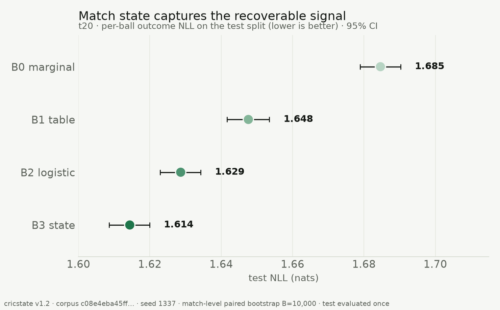
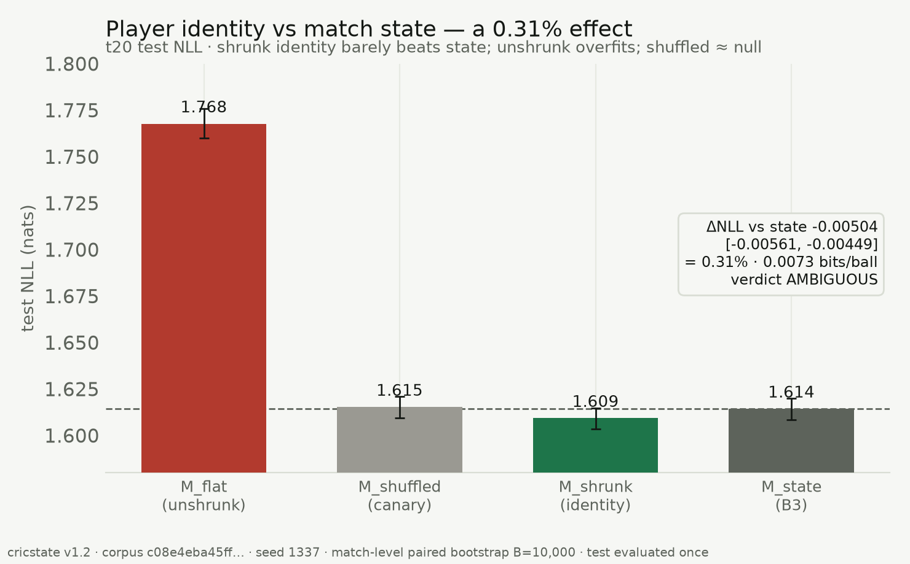
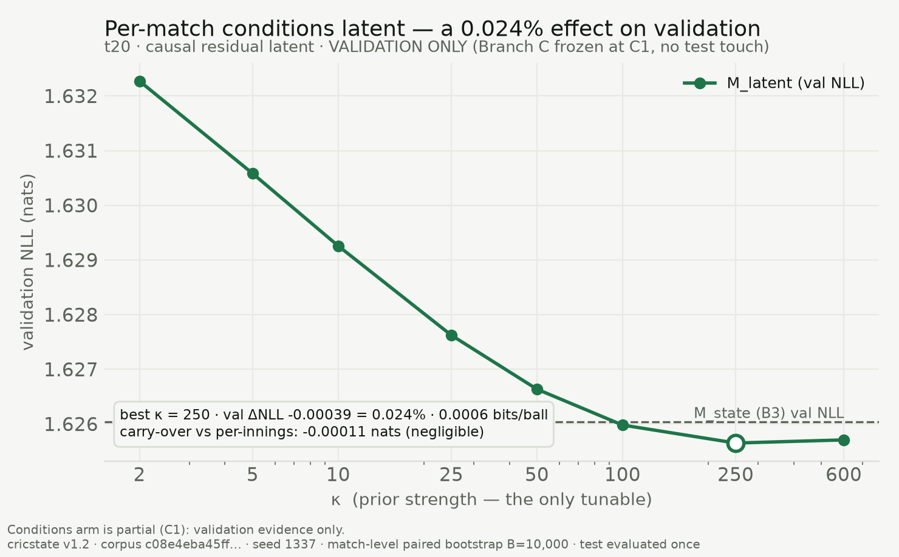
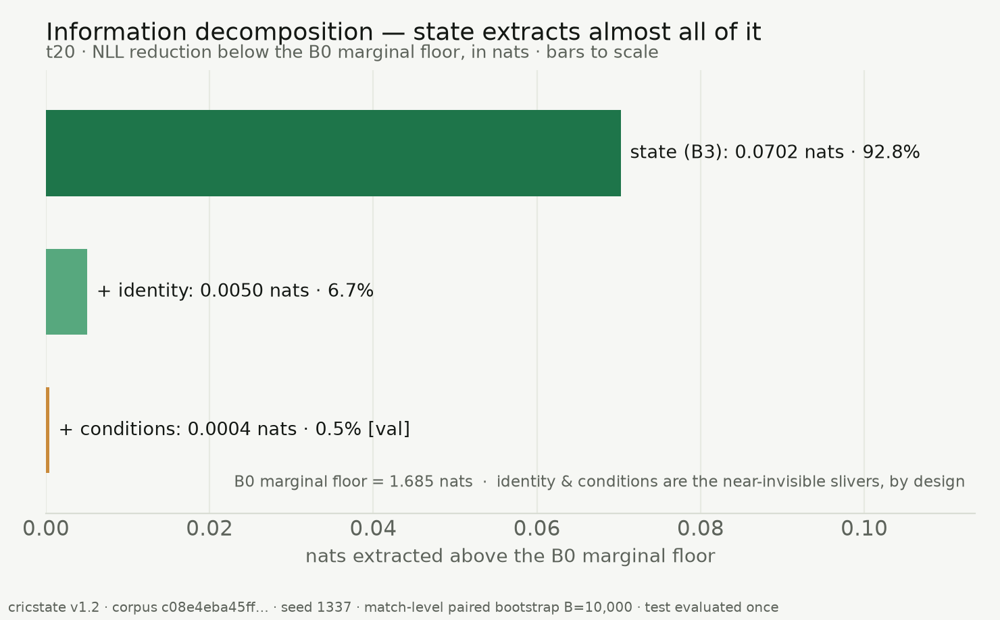
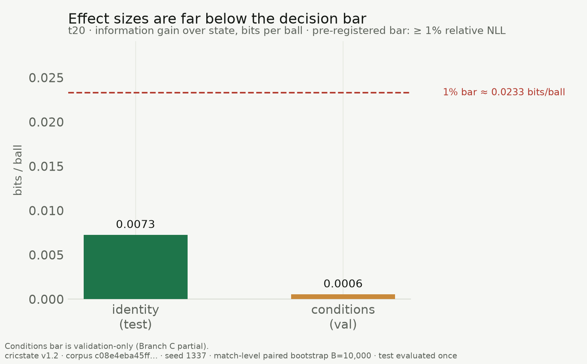
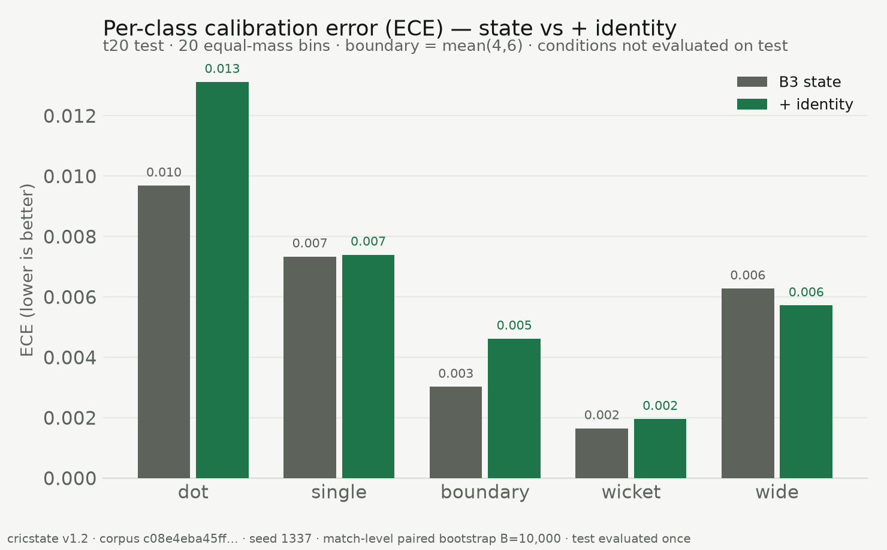

A strong state model, two honest enrichment experiments, and an evaluation protocol fixed before the test split was ever read.
We ask a single, falsifiable question: once a strong model conditions on within-match state (score, wickets, balls, run-rate, phase), how much additional predictive signal remains in the two features practitioners reach for next — player identity and match-level latent conditions — using only freely available ball-by-ball data? We evaluate per-ball outcome prediction over a frozen 11-class alphabet on 16,754 men's and women's T20/ODI matches (4.75M deliveries), with an 80/10/10 temporal split, negative log-likelihood (NLL) as the primary metric, and 95% confidence intervals from a match-level paired bootstrap (10,000 resamples). Against a gradient-boosted state model (B3, test NLL 1.614 nats), a strongly shrunk player-identity model improves test NLL by 0.31% (0.0073 bits/ball) — statistically distinguishable from zero but below our fixed 1% materiality bar (verdict: AMBIGUOUS). A causally-filtered per-match "conditions" latent improves validation NLL by 0.024% (0.0006 bits/ball), an order of magnitude smaller; on that evidence the arm was frozen before its one-time test evaluation. Leakage canaries (shuffled identity, shuffled targets, poisoned features, temporal-split integrity) all pass. We conclude that within-match state is saturating: it captures ~93% of the recoverable-above-marginal signal, and the two obvious enrichments buy almost nothing. We publish this as a negative result, with the evaluation protocol fixed before the test split was read.
Sports-modelling results are easy to report and hard to trust: models tuned on the data they are scored on, point estimates without uncertainty, calibration asserted after the fact. This paper is built the other way around. We fix one hypothesis, one primary metric, one uncertainty procedure, and a decision rule before looking at the test split, then report whatever the rule returns — including "not worth it."
The substantive question is whether free ball-by-ball data contains exploitable structure beyond match state. Two candidate sources dominate practitioner intuition: who is involved (batter/bowler skill) and where/under what conditions the match is played (pitch, weather, a "high-scoring day"). We measure each as an increment over a strong state baseline, and we make the measurement adversarial to ourselves with explicit leakage canaries.
Ball-by-ball data is from Cricsheet (CC BY-SA 4.0), pinned by SHA-256 as corpus v1.2. A deterministic state machine parses each match into per-delivery rows; 100% of the 22,211 snapshot files either parse cleanly (99.1% of in-scope T20/ODI) or land in a quarantine log with a closed-enum reason code. The prediction target is the next delivery's outcome over a frozen K = 11 alphabet (dot, 1, 2, 3, 4, 6, other-runs, bye/leg-bye, no-ball, wide, wicket). This paper studies the T20 cell.
Splits are 80/10/10 temporal by match start date (train ends 2024-11-02; test is 2025-08-30 onward), baked into the corpus so they cannot drift. Split integrity — no match in two splits, strictly ordered date boundaries — is a build-failing test.
Baseline ladder and the state model (B3). We report a ladder from a marginal baseline
(B0) through a bucketed table (B1) and regularized logistic model (B2) to a
gradient-boosted state model (B3) — HistGradientBoostingClassifier on 27
whitelisted within-match state features, no identity, no latent variables. B3 is the strong
baseline every enrichment must beat (Table 1, Figure 1).
Identity model. Per-player log-odds offsets for the on-strike batter and the bowler over the 11 classes, estimated by empirical-Bayes (Dirichlet) shrinkage toward the population marginal, and added to B3's logits. The prior strength (λ) is the only tunable, chosen on validation; unseen players receive the population mean (a zero offset). We also fit an unshrunk variant (M_flat) to quantify the cost of not regularizing, and a shuffled-identity model as a leakage canary.
Conditions model (causal latent). A scalar per-match "conditions" latent θ, estimated by a conjugate Gaussian filter that is strictly causal: the estimate for ball t uses only the outcomes of balls before t in the same match. The signal is the B3 residual — observed scoring valence minus B3's expected valence — so the latent can only explain scoring that state does not already capture. θ enters as a gain-free exponential tilt of B3's distribution; the prior strength κ is the only tunable, chosen on validation. A structural unit test proves causality: permuting balls at or after t leaves the prediction for t unchanged.
Evaluation. Primary metric is test NLL (nats). Uncertainty is a match-level paired bootstrap (resample matches, not balls — within-match dependence makes ball-level resampling fake precision), 10,000 resamples, fixed seed, 95% percentile CIs on metrics and on paired deltas. We also report multiclass Brier and per-class expected calibration error (ECE, 20 equal-mass bins). Calibration maps (temperature) are fit on validation only.
Pre-registered decision rule. An enrichment JUSTIFIES further work iff its paired ΔNLL 95% CI excludes 0 and relative improvement ≥ 1.0%; AMBIGUOUS if the CI excludes 0 but improvement is in [0.3%, 1.0%); KILL otherwise. The protocol was fixed before the test split was read; no threshold is renegotiated after a result (amendments are additive and dated). SPEC_M2 §6 gives the exact, git-checkable timeline.
Leakage canaries (all must pass). Shuffled-identity (identities randomly reassigned → must collapse to the state baseline within 0.01 nats), shuffled-target (retrain on permuted labels → must sit at the marginal), poisoned-column (an injected outcome feature must be structurally unreachable), and temporal-split integrity.
State captures the signal (Figure 1, Table 1). The ladder is strictly ordered on test: B0 1.685 → B1 1.648 → B2 1.629 → B3 1.614 nats. State extracts 0.070 nats below the marginal floor.
| model | kind | test NLL [95% CI] |
|---|---|---|
| B0_marginal | no-information baseline | 1.68462 [1.67895, 1.69028] |
| B1_table | bucketed empirical table | 1.64761 [1.64166, 1.65349] |
| B2_logistic | regularized logistic | 1.62865 [1.62292, 1.63427] |
| B3_gbm | state model (the strong baseline) | 1.61438 [1.60858, 1.61995] |
Table 1. The state ladder, t20 test split, per-ball outcome NLL (lower is better), 95% match-level paired-bootstrap CIs.
Player identity: real but immaterial (Figure 2, Table 2). The shrunk identity model reaches test NLL 1.60934 [1.60360, 1.61489], a paired improvement over state of −0.00504 [−0.00561, −0.00449] nats — the CI excludes zero, so the effect is real, but it is only 0.31% relative (0.0073 bits/ball): Ambiguous. The unshrunk model is 0.153 nats worse than state (Figure 2) — raw per-player tables destroy a good state model — and the shuffled-identity canary sits at the baseline (+0.00095 nats, PASS). The gain is diluted by data limits: 5.25% of test balls have an unknown incoming batter (the observation gap) and 14–19% involve players unseen in training. Notably, identity slightly worsens per-class calibration for dot (0.010→0.013) and boundary (0.003→0.005) balls (Figure 6): the small NLL gain is not a free calibration win.
| model | test NLL [95% CI] | note |
|---|---|---|
| M_state | 1.61438 [1.60858, 1.61995] | |
| M_shrunk | 1.60934 [1.60360, 1.61489] | empirical-Bayes shrunk striker+bowler effects |
| M_flat | 1.76775 [1.75993, 1.77592] | unshrunk MLE — overfits sparse players |
| M_shuffled | 1.61533 [1.60952, 1.62090] | shuffled-identity leakage canary |
Table 2. Identity arm. Primary ΔNLL (shrunk minus state): −0.00504 [−0.00561, −0.00449] = 0.31% relative, 0.0073 bits/ball. Verdict: AMBIGUOUS. Dilution: null-striker 5.25%, unseen striker 14.45%, unseen bowler 19.15%.
Match conditions: negligible on validation (Figure 3, Table 3). The causal latent's validation NLL curve is unimodal with an interior optimum at κ = 250, where it improves validation NLL by −0.00039 nats = 0.024% (0.0006 bits/ball) — an order of magnitude below the identity effect. A per-innings variant (no cross-innings carry-over) differs from the full-match latent by only ~0.0001 nats, so the pitch-persistence/team-quality confound is not materially active. On this evidence the conditions arm was frozen at its validation stage (C1); its one-time test evaluation was not run. We therefore make no test-set claim for conditions.
| quantity | value |
|---|---|
| M_state val NLL | 1.62604 |
| M_latent (full match) val NLL | 1.62565 |
| M_latent (per-innings) val NLL | 1.62576 |
| best κ (val) | 250 |
| val ΔNLL vs state | −0.00039 (0.024%) |
| bits/ball (val) | 0.0006 |
| carry-over (full minus per-innings) | −0.00011 nats |
Table 3. Conditions arm — partial, Branch C frozen at C1 (validation only; C2 canary and C3 single test touch not executed, by decision). Scope: scoring-rate valence latent only; a null does not rule out non-scoring conditions structure (e.g. wicket-prone-but-not-low-scoring pitches).
Information decomposition (Figure 4). Of the signal recoverable above the marginal floor, state accounts for 92.8%, identity for 6.7% (test), and conditions for 0.5% (validation). Both enrichments are near-invisible slivers.
Effect sizes vs the bar (Figure 5). Both increments sit far below the 1% materiality threshold (≈ 0.023 bits/ball): identity at 0.0073, conditions at 0.0006 bits/ball.
Leakage canaries (Table 4). Shuffled-identity, shuffled-target, poisoned-column, and temporal-split integrity all PASS. The match-shuffle canary for the conditions arm was not run (arm frozen at C1).
| test | scope | result |
|---|---|---|
| shuffled_identity | identity (Branch A, test) | PASS |
| shuffled_target | M2 P3, all cells | PASS |
| poison_column | feature builder | PASS |
| temporal_split | corpus v1.2 | PASS |
| match_shuffle | conditions (Branch C) | NOT RUN (arm frozen at C1) |
Table 4. Leakage canaries.
State saturation. The consistent finding across both arms is that a gradient-boosted model of within-match state already captures nearly all the per-ball predictive structure that free ball-by-ball data exposes. Identity adds a real but sub-materiality 0.31%; a causal conditions latent adds an order of magnitude less. The practitioner's two obvious next features do not, on this data, clear a fixed materiality bar.
Scope of the conditions null. By construction the conditions latent is a scoring-valence signal (runs-weighted). A null therefore rules out a per-match scoring-rate conditions factor beyond state — not conditions in general. A pitch that is wicket-prone without being low-scoring is invisible to a runs-weighted latent; that hypothesis remains open.
Why we froze Branch C. The validation effect (0.024%) is an order of magnitude below an already-AMBIGUOUS identity effect and far below the KILL threshold. Spending the one-time test evaluation was not warranted; freezing at validation is the honest, discipline-preserving choice and is marked as partial completion.
Honesty over performance. Every number here is directly comparable to a frozen leaderboard because the same harness (splits, metrics, bootstrap, B3) produced all of them. The unshrunk identity result and the identity-calibration regression are reported precisely because they cut against a "player modelling helps" narrative.
Within-match state is a saturating predictor of the next ball in free ball-by-ball cricket data. Player identity contributes a real but immaterial 0.31% (AMBIGUOUS under a fixed decision rule); a causal per-match scoring conditions latent contributes a negligible 0.024% on validation and was frozen before its test evaluation. The scientific content of this repository is not a model that wins — it is a measurement, made adversarial to itself and pre-committed, that says the obvious enrichments are not worth building.
c08e4eba…a11a6781; labels
e11bf9c8…20324f.results/summary.json.
Figures: report/figures/.
Tables: report/tables/.uv run python scripts/generate_figures.py.docs/LEADERBOARD.md,
docs/BRANCH_A_REPORT.md,
artifacts/branch_c/c1_kappa_curve.json.





docs/SPEC_M1.md,
docs/SPEC_M2.md
(with gate-documented amendments) in this repository.